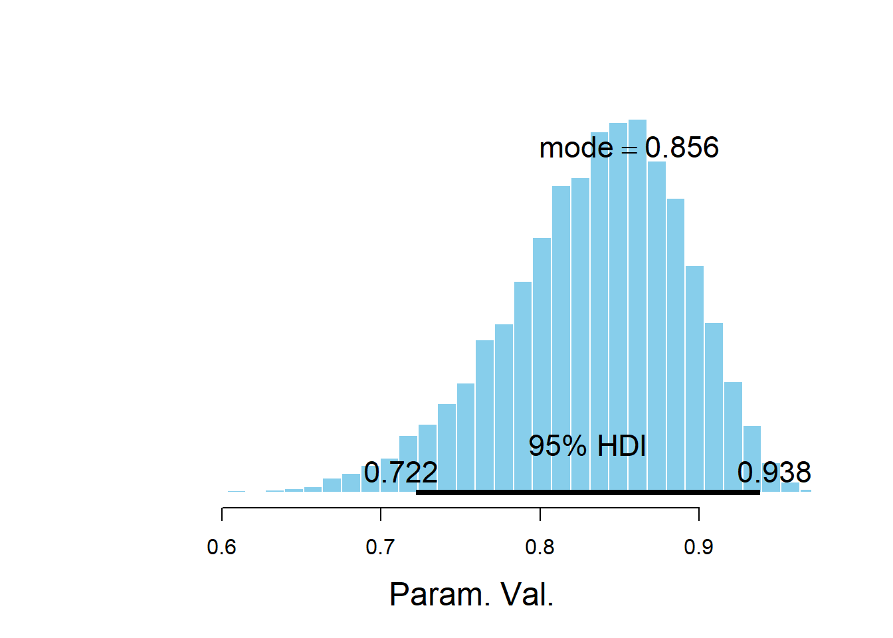
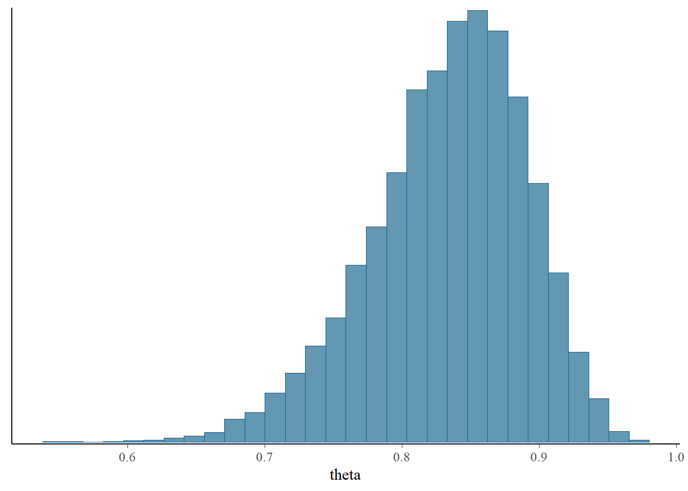
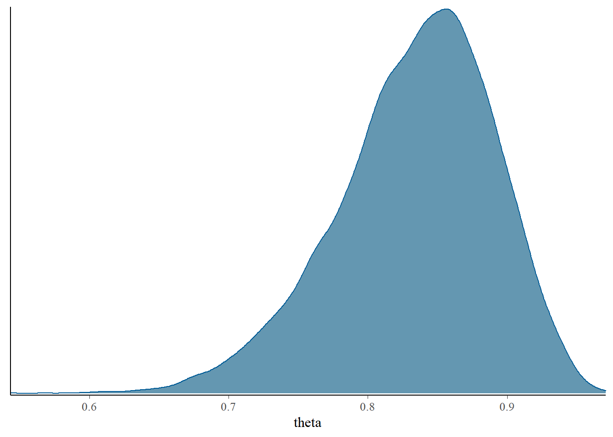
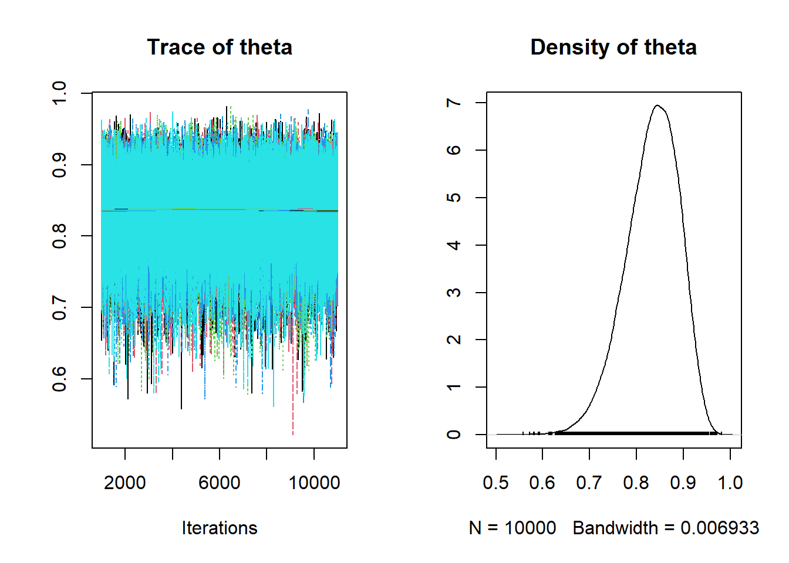
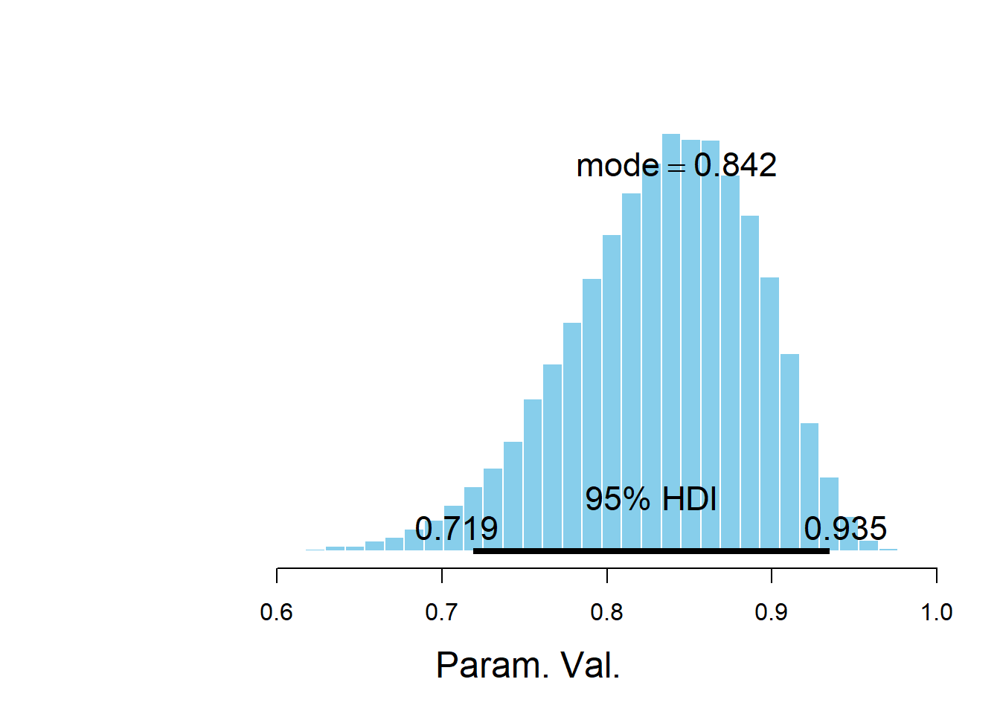

8.2 Example 17.1: Beta-Binomial Model — “Data is singular”
8.2.1 Load the data
The data could be loaded from a file, or specified via sufficient summary statistics. Here we’ll just load the summary statistics and in later examples we’ll show how to load individual values.
8.2.2 Specify the model: likelihood and prior
A JAGS model specification starts with model. The model provides a textual description of likelihood and prior. This text string will then be passed to JAGS for translation.
Recall that for the Beta-Binomial model, the prior distribution is \(\theta\sim\text{Beta}(\alpha, \beta)\) and the likelihood for the total number of successes \(Y\) in a sample of size \(n\) corresponds to \((Y|\theta)\sim \text{Binom}(n, \theta)\). Notice how the following text reflects the model (prior & likelihood).
Note: JAGS syntax is similar to, but not the same, as R syntax. For example, compare dbinom(y, n, theta) in R versus y ~ dbinom(theta, n) in JAGS. See the JAGS user manual for more details. You can use comments with # in JAGS models, similar to R.
8.2.3 Compile in JAGS
We pass the model (which is just a text string) and the data to JAGS to be compiled via jags.model. The model is defined by the text string via the textConnection function. The model can also be saved in a separate file, with the file name being passed to JAGS. The data is passed to JAGS in a list. In dataList below y=y, n=n maps the data defined by y=22, n=25 to the terms y, n specified in the model_string.
## Compiling model graph
## Resolving undeclared variables
## Allocating nodes
## Graph information:
## Observed stochastic nodes: 1
## Unobserved stochastic nodes: 1
## Total graph size: 5
##
## Initializing model8.2.4 Simulate values from the posterior distribution
Simulating values in JAGS is completed in essentially two steps. The update command runs the simulation for a “burn-in” period. The update function merely “warms-up” the chains, and the values sampled during the update phase are not recorded. (We will discuss “burn-in” in slightly more detail next week.)
After the update phase, we simulate values from the posterior distribution that we’ll actually keep using coda.samples. Using coda.samples arranges the output in a format conducive to using coda, a package which contains helpful functions for summarizing and diagnosing MCMC simulations. The variables to record simulated values for are specified with the variable.names argument. Here there is only a single parameter theta, but a later example illustrates a multi-parameter example.
8.2.5 Summarizing simulated values and diagnostic checking
Standard R functions like summary and plot can be used to summarize results from coda.samples. We can summarize the simulated values of theta to approximate the posterior distribution.
##
## Iterations = 2001:12000
## Thinning interval = 1
## Number of chains = 1
## Sample size per chain = 10000
##
## 1. Empirical mean and standard deviation for each variable,
## plus standard error of the mean:
##
## Mean SD Naive SE Time-series SE
## 0.8336014 0.0564828 0.0005648 0.0007378
##
## 2. Quantiles for each variable:
##
## 2.5% 25% 50% 75% 97.5%
## 0.7079 0.7994 0.8396 0.8741 0.9276
The Doing Bayesian Data Analysis (DBDA2E) textbook package also has some nice functions built in, in particular in the DBD2AE-utilities.R file.
For example, the plotPost functions creates an annotated plot of the posterior distribution along with some summary statistics. (See the DBDA2E documentation for additional arguments.)
##
## *********************************************************************
## Kruschke, J. K. (2015). Doing Bayesian Data Analysis, Second Edition:
## A Tutorial with R, JAGS, and Stan. Academic Press / Elsevier.
## *********************************************************************##
## Attaching package: 'runjags'## The following object is masked from 'package:tidyr':
##
## extract
## ESS mean median mode hdiMass hdiLow hdiHigh
## Param. Val. 5861.153 0.8336014 0.8395815 0.856098 0.95 0.7221655 0.9381524
## compVal pGtCompVal ROPElow ROPEhigh pLtROPE pInROPE pGtROPE
## Param. Val. NA NA NA NA NA NA NAThe bayesplot package also provides lots of nice plotting functionality.
## Warning: package 'bayesplot' was built under R version 4.0.3## This is bayesplot version 1.8.0## - Online documentation and vignettes at mc-stan.org/bayesplot## - bayesplot theme set to bayesplot::theme_default()## * Does _not_ affect other ggplot2 plots## * See ?bayesplot_theme_set for details on theme setting## `stat_bin()` using `bins = 30`. Pick better value with `binwidth`.


8.2.6 Posterior prediction
The output from coda.samples is stored as an mcmc.list format. The simulated values of the variables identified in the variable.names argument can be extracted as a matrix (or array) and then manipulated as usual R objects.

The matrix would have one column for each variable named in variable.names; in this case, there is only one column corresponding to the simulated values of theta.
We can now use the simulated values of theta to simulate replicated samples to approximate the posterior predictive distribution. To be clear, the code below is running R commands within R (not JAGS).
(There is a way to simulate predictive values within JAGS itself, but I think it’s more straightforward in R. Just use JAGS to get a simulated sample from the posterior distribution. On the other hand, if you’re using Stan there are functions for simulating and summarizing posterior predicted values.)
ynew = rbinom(Nrep, n, thetas)
plot(table(ynew),
main = "Posterior Predictive Distribution for samples of size 25",
xlab = "y")
8.2.7 Loading data as individual values rather than summary statistics
Instead of the total count (modeled by a Binomial likelihood), the individual data values (1/0 = S/F) can be provided, which could be modeled by a Bernoulli (i.e. Binomial(trials=1)) likelihood. That is, \((Y_1, \ldots, Y_n|\theta)\sim\) i.i.d. Bernoulli(\(\theta\)), rather than \((Y|\theta)\sim\text{Binom}(n, \theta)\). The vector y below represents the data in this format. Notice how the likelihood in the model specification changes in response; the n observations are specified via a for loop.
8.2.8 Simulating multiple chains
The Bernoulli model can be passed to JAGS similar to the Binomial model above. Below, we have also introduced the n.chains argument, which simulates multiple chains and allows for some additional diagnostic checks. Simulating multiple chains helps assess convergence of the MC to the target distribution. (We’ll discuss a few more details next week.) Initial values for the chains can be provided in a list with the inits argument; otherwise initial values are generated automatically.
# Compile the model
dataList = list(y=y, n=n)
model <- jags.model(textConnection(model_string),
data=dataList,
n.chains=5)## Compiling model graph
## Resolving undeclared variables
## Allocating nodes
## Graph information:
## Observed stochastic nodes: 25
## Unobserved stochastic nodes: 1
## Total graph size: 29
##
## Initializing model# Simulate
update(model, 1000, progress.bar="none")
Nrep = 10000
posterior_sample <- coda.samples(model,
variable.names=c("theta"),
n.iter=Nrep, progress.bar="none")
# Summarize and check diagnostics
summary(posterior_sample)##
## Iterations = 1001:11000
## Thinning interval = 1
## Number of chains = 5
## Sample size per chain = 10000
##
## 1. Empirical mean and standard deviation for each variable,
## plus standard error of the mean:
##
## Mean SD Naive SE Time-series SE
## 0.8330983 0.0569430 0.0002547 0.0002545
##
## 2. Quantiles for each variable:
##
## 2.5% 25% 50% 75% 97.5%
## 0.7090 0.7970 0.8382 0.8746 0.9286
If multiple chains are simulated, the DBDA2E function diagMCMC can be used for diagnostics.
Note: Some of the DBDA2E output, in particular from diagMCMC, isn’t always displayed when the RMarkdown file is knit. You might need to manually run these cells within RStudio. I’m not sure why; please let me know if you figure it out.

## ESS mean median mode hdiMass hdiLow hdiHigh
## Param. Val. 50000 0.8330983 0.8381741 0.8422727 0.95 0.7191407 0.9348052
## compVal pGtCompVal ROPElow ROPEhigh pLtROPE pInROPE pGtROPE
## Param. Val. NA NA NA NA NA NA NA